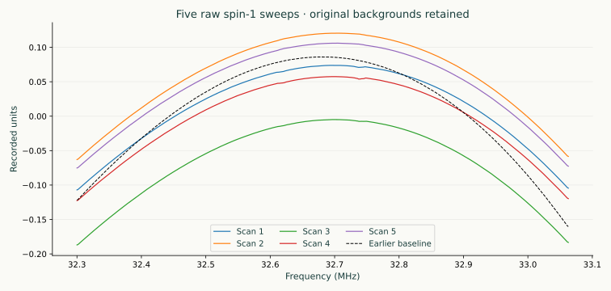
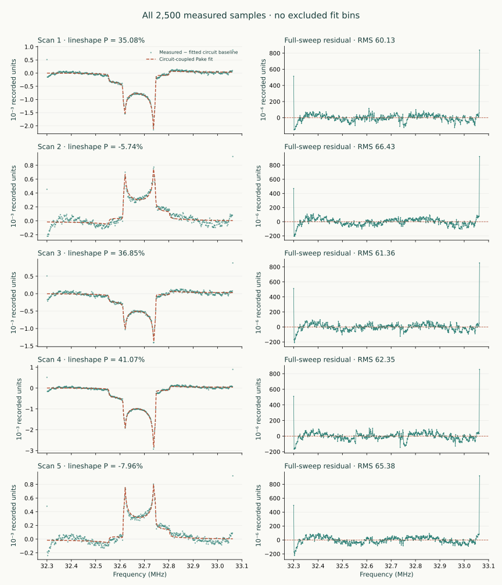
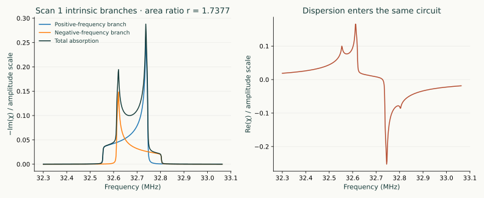
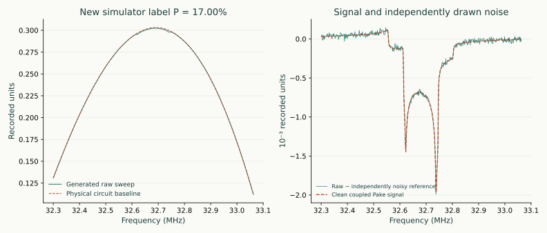

From five experimental sweeps to new training examples
Match the lineshape.
Build the generator.
These measured signals are our development examples. Fit the physical Q-meter response and complex spin-1 Pake doublet together, infer polarization from the branch shapes, and use the fitted configurations to generate new spectra with known simulator labels.
This is the next part of phase one, after the baseline practical. It uses Sample_RawSignal.csv, shared for teaching. The implementation is standalone and follows the paper's circuit theory and spin-1 lineshape relations.
Experimental example 1 of 3
A starting model, then material and setup comparisons.
The owner identified these five sweeps as butanol. This first example retains the original single-site fit and generator. The next two examples show how material identity and acquisition details change the fitting task.
| Example | What changes |
|---|---|
| 1 · This single-site exercise | Full-circuit fit and a separate 500-bin teaching generator |
| 2 · Butanol: C–D and O–D | The supplied two-site theory fitted to these same five raw sweeps, with full residual comparisons |
| 3 · UVA-ND3 data | A different acquisition with its own measured frequency grid and recorded baseline subtraction |
These are three worked examples across two datasets. The material comparisons do not revise the generators or establish new network accuracy.
01 · Preserve the measurement
Five scans. The same confirmed frequency contract.
The file has five timestamp-plus-500-sample records, five Unicode line separators (U+2028), and 18 blank logical lines. There are no polarization labels or frequency columns. The audited reader handles those separators explicitly, rejects malformed numbers, and preserves every record in its supplied order. Timestamps are not in increasing order; do not sort silently.
n = 1, λ/2 = 3.580 m at 32.7 MHz
These signal scans use the same grid and cable setup as the baseline example, confirmed in the experimental set up details. The file is published byte-for-byte: cdbb7e3afa6531694a4b97848d295bbb5c7c03ef62d796b053e3b4e16fbaea5a. Amplitudes remain in recorded units; that does not prevent lineshape-based polarization extraction.
import sys
sys.path.insert(0, "tools")
from experimental_data import load_signal_csv
from baseline_data import load_acquisition, acquisition_grid
records, audit = load_signal_csv("examples/Sample_RawSignal.csv")
frequency_mhz = acquisition_grid(load_acquisition()) / 1e6
assert records.shape == (5, 501)
signals = records[:, 1:] # keep field 0 as timestamp metadata
The backgrounds are not identical to the earlier baseline: gain, phase, tuning and offset affect the sweep. Direct subtraction alone would leave a large background difference. We fit each raw sweep with the circuit, rather than treating that difference as nuclear signal or random noise.
02 · Match the full measurement
One circuit. Complex susceptibility. A fitted detector response.
Q(P) = 3P² / [2 + √(4 − 3P²)]
w₊ = (P + Q)/2, w₋ = (P − Q)/2
r = w₊/w₋, P = (r² − 1)/(r² + r + 1)
K₊ and K₋ are the complex powder-averaged Pake kernels, including absorption, dispersion, Lorentzian broadening and EFG asymmetry. Their absorption integrals are normalized on the infinite reduced-frequency axis, not renormalized to this finite sweep. The branch-area ratio is not a detector peak-height ratio. At P = 0 the signal vanishes; the limiting ratio is one, but there is no finite observed signal from which to determine that ratio.
The same coil, stray admittance, passive RLGC line, one series capacitor and loaded detection node are used for χ = 0 and χ ≠ 0. Cable L and C stay consistent with the known half-wave. This first matching model fixes the cable at its nominal 3.580 m and uses zero shunt stray capacitance as an explicit simplifying assumption. Coil and resistance seeds remain the stated nominal values. The tuning capacitor is fitted, not held at an assumed knob setting.
y_fit(f) = a Re[u(f) exp(iφ_var(f))]
+ b Im[u(f) exp(iφ_var(f))] + d
a = A cos φ₀, b = −A sin φ₀
Fit the slowly varying phase terms described in the paper's Eqs. (10)–(14). This extends the constant-phase diagnostic in the earlier baseline practical. It is a phase response acting on complex voltage, not an invented polynomial voltage background. The three linear readout coefficients are solved analytically at each nonlinear step; they still count as three fitted unknowns.
- Initialize the electronics using the declared wings outside 32.50–32.85 MHz. This only provides starting values; nuclear tails can extend into the wings.
- Fit all 500 raw samples jointly with the signal-on circuit. Do not freeze a wing-subtracted polynomial or exclude the endpoints.
- Repeat from six starting points, including both signs of polarization. Save unsuccessful alternatives too.
- Reconstruct the full fitted sweep and χ = 0 baseline from the saved parameters, then inspect their difference and the full residual separately.
python tools/match_experimental_signals.py \
--output-dir local-results/experimental-matching --starts 6The matching configuration specifies the confirmed grid, circuit hypothesis, every starting value and numerical bound. Saved outputs include per-scan CSVs, per-scan fit records, the baseline-reference comparison and matching_report.json. Use a fresh output directory.
Parameter inventory
Know what each fitted quantity means.
| Parameter | Meaning and units | Fit treatment |
|---|---|---|
| Center f_c | Larmor-centered lineshape position, MHz | Fit within 32.64–32.71 MHz |
| Split scale Δ | Reduced frequency x = (f − f_c)/Δ; Δ = 3ω_Q/(2π), MHz | Fit within 0.045–0.085 MHz; not an observed peak separation after broadening |
| Broadening g | Dimensionless Lorentzian HWHM divided by Δ; physical HWHM = gΔ | Fit within 0.004–0.20 |
| EFG asymmetry η | Single-site electric-field-gradient asymmetry; distinct from coil filling factor | Fit within 0–0.25 in this model |
| P | Fractional vector polarization, constrained through Q(P) and both branch weights | Fit within −0.95 to +0.95; TE calibration is not used |
| log₁₀ sχ | Effective susceptibility amplitude for the nominal filling factor | Fit within −8 to −1; represents an amplitude nuisance, not a universal material constant |
| log₁₀ C_tune[pF] | Effective series tuning capacitance; a knob-to-capacitance conversion is a separate quantity | Fit over 10–2000 pF; numerical interval, not a measured tolerance |
| φ₁ | Detector phase slope in rad/MHz | Fit within −1 to +1 rad/MHz |
| φ₂ | Detector phase curvature in rad/MHz² | Fit within −3 to +3 rad/MHz² |
| a, b | Two voltage quadratures, recorded units per node volt; equivalently gain A and phase φ₀ | Profiled linear least squares; RF drive held nominal to avoid an unidentifiable gain product |
| d | Additive detector/DAQ offset, recorded units | Profiled linear least squares; no sweep-minimum subtraction |
Fixed inputs are the acquisition grid, nominal 32.7 MHz reference, n=1 cable at 3.580 m, nominal coil R/L and source/input/damping resistances, nominal cable impedance and loss, G′=0, C_stray=0 and nominal filling factor. The machine-readable record retains them all; the baseline parameter catalogue explains their physical roles. In that stored reference-circuit object, the tuning-capacitor entry is only an initialization value: the actual capacitor is derived from the fitted log-coordinate at every evaluation.
These bounds are explicit fitting choices, not error bars. Do not optimize filling factor and susceptibility amplitude as two independently identifiable measurements. For tensor-enhanced or multi-site samples, replace the spin-temperature single-site assumption with the appropriate constrained physics.
Measured results · every supplied scan
The fitted lineshapes, with the residuals visible.
Each curve is fitted directly to all 500 raw samples. The left panels subtract only that fit's physical χ = 0 circuit response for display. The right panels show recorded minus full fitted voltage; no endpoints are cropped from the fit or statistics. Polarization comes from the spin-1 shape, not TE area calibration.

| Scan | P from shape | Center (MHz) | Split scale (kHz) | Lorentzian HWHM (kHz) | EFG η | C_tune (pF) | RMS (10⁻⁶ units) |
|---|---|---|---|---|---|---|---|
| 1 | 35.078% | 32.678999 | 62.458 | 1.207 | 0.0643 | 635.16 | 60.13 |
| 2 | -5.738% | 32.678749 | 62.308 | 1.382 | 0.0634 | 1153.70 | 66.43 |
| 3 | 36.846% | 32.680238 | 62.487 | 1.154 | 0.0658 | 611.28 | 61.36 |
| 4 | 41.070% | 32.679916 | 62.425 | 0.939 | 0.0677 | 649.28 | 62.35 |
| 5 | -7.965% | 32.678977 | 62.313 | 0.973 | 0.0673 | 1128.65 | 65.38 |
All selected fits converged without an active near-bound warning. There were 6 starting points per scan; 1 alternative start(s) reached the evaluation limit and remain in the saved report. Agreement among successful starts checks the optimizer—it is not a polarization confidence interval. The complete fit record retains all candidates, parameter sources, the numerical conditioning and code/data hashes.
Check the branches before interpreting detector peaks

These intrinsic absorption branches have the fitted spin-temperature area ratio. The observed detector trace additionally contains dispersion mixing and the circuit transfer function. Do not replace the branch-area ratio with the ratio of two observed peak heights.
What remains in the residual?
| Scan | High-frequency σ proxy (10⁻⁶) | Full residual lag-one correlation | Maximum |residual| (10⁻⁶) |
|---|---|---|---|
| 1 | 19.51 | 0.430 | 837.6 |
| 2 | 22.92 | 0.518 | 922.2 |
| 3 | 20.54 | 0.426 | 852.1 |
| 4 | 19.32 | 0.438 | 855.2 |
| 5 | 22.06 | 0.511 | 920.4 |
The high-frequency proxy is much smaller than the full RMS. Residuals contain smooth mismatch and endpoint structure, not just random noise. The first generator uses the estimated high-frequency scale in a white-Gaussian reference model; it does not claim that white noise reproduces every observed residual. Supply a characterized 500 × 500 covariance for colored Gaussian noise, and model reproducible acquisition artifacts separately.
From fitted examples to new labeled sweeps
A generated event—not a copied experimental label.
This example is the first event (array index 0) from an actual run of 2,000 newly generated spectra and 100 varied configurations. Its polarization was sampled by the simulator. The experimentally fitted P values are not copied into the training target array.

Raw voltage, clean χ = 0 baseline, clean nuclear response, event noise and independently noisy reference are stored separately. This is a 500-bin, recorded-unit, lineshape-regression dataset. It is not silently converted into the existing 512-bin TE-area benchmark.
04 · Characterize what is left
Do not turn every residual into noise.
The √6 follows from the variance of coefficients [1, −2, 1] for independent equal-variance noise. MAD is the median absolute deviation about the median. This diagnostic uses consecutive triplets entirely within the declared outer wings; all 500 bins still enter the fit and full residual statistics. It assumes locally smooth mean response and Gaussian independent noise. Colored noise, high-frequency pickup and unresolved features can invalidate that interpretation.
The generator's default is a first white-Gaussian reference at this estimated high-frequency scale. The visible residual correlation and endpoint deviations are not erased or relabeled as white noise. Investigate stationary noise correlation, coherent pickup, settling and model mismatch separately. Five different polarized scans are not repeated measurements of an unchanged signal and cannot supply an unrestricted 500 × 500 noise covariance.
python tools/generate_matched_data.py \
--matching-report local-results/experimental-matching/matching_report.json \
--noise-covariance characterized_covariance_recorded_units_squared.npy \
--output local-results/matched-correlated.npzUse that optional covariance only when characterized for the same 500-bin grid and recorded-unit convention. The generator rejects wrong dimensions, asymmetry and negative eigenvalues; a positive-semidefinite matrix can still be scientifically inappropriate for the acquisition.
05 · Robustness has to be explicit
Preserve fitted relationships, then explore controlled variations.
Each measured fit supplies one complete seed configuration. Keep its capacitance, readout, amplitude and lineshape parameters together; combining arbitrary independent extrema would destroy fitted relationships. Generate new configurations around those seeds using the explicit coverage file.
| Coordinates | Variation | Constraint preserved |
|---|---|---|
| RF drive, source/input/damping R, coil R/L, tuning C, conductor loss, readout gain | ±1% | Positive components; inherited joint operating-point seed |
| Effective susceptibility amplitude | ±5% | Nominal filling factor held fixed rather than double-counting coupling uncertainty |
| Cable trim | ±5 mm | Inside the established ±3% n=1 neighborhood; L/C recomputed together when loss changes to retain λ/2=3.580 m |
| Center, splitting, broadening, EFG η | ±1 kHz, ±1%, ±5%, ±0.005 | Positive widths and 0 ≤ η ≤ 1 |
| Phase offset, slope, curvature | ±0.01 rad, ±0.01 rad/MHz, ±0.02 rad/MHz² | Phase applied to complex voltage, not added as a background polynomial |
| Readout offset | ±0.001 recorded units | Explicit additive detector offset |
| Polarization | New uniform draws over −0.6 to +0.6 by default | Exact spin-temperature weights; configurable interval within −1 to +1 |
Five development examples do not establish the frequency of operating conditions or their full correlations. These excursions test sensitivity and broaden training coverage. Expand or constrain them using further development scans and physical constraints, rather than presenting them as measured distributions.
06 · Produce labeled data
New P. New physical configuration. Independent noise.
python tools/generate_matched_data.py \
--matching-report local-results/experimental-matching/matching_report.json \
--num-samples 2000 --num-configurations 100 --seed 42 \
--output local-results/experiment-anchored.npz
python tools/export_signal_matching.py \
--fit-dir local-results/experimental-matching \
--dataset local-results/experiment-anchored.npzraw = V_det(χ(P)) + ε_event
reference = B + ε_reference / √N_reference
The nuclear response is included once through susceptibility; it is not added twice. Spectral amplitudes are float64 in recorded units, preserving small differences. Polarization is a float64 fraction, frequencies are float64 in MHz, identifiers are integers, and provenance fields are strings. The default independent reference averages 16 synthetic sweeps and is shared within a simulated configuration. That count is an explicit teaching setting, not a claimed experimental averaging count.
The NPZ stores signals, clean_raw, clean_baseline, clean_signal, noise, independently noisy baselines, new fractional P, configuration_id, source_scan_1based and the exact frequency_mhz. The companion JSON records every configuration, coverage assumption, source/fit/code/data hash, noise convention and random seed. Output files are protected against overwrite.
Before calling the generator validated
Test the physics and the statistical task separately.
- Check each raw overlay, both intrinsic branches, full residuals, bound status and competing solutions.
- Confirm the selected lineshape model is appropriate for the target material and spin-temperature state.
- Validate noise and acquisition-artifact behavior; white noise alone does not explain the displayed residuals.
- Recover known simulated polarizations over controlled pseudo-experiments, checking bias and width versus P.
- Group by
source_scan_1basedwhen testing unseen measured seed configurations. All simulated descendants must stay together, even if they have differentconfiguration_idvalues. Five development scans do not constitute an independent experimental test set. - Increase generated counts only after these checks; more samples cannot remove a systematic model error.
Run python -m unittest discover -s tests -v. Tests cover raw-file preservation, the spin-1 branch-ratio relation, complex circuit readout, capacitor sensitivity, synthetic recovery, covariance validity, reproducibility and reconstruction of the published experimental matches.
See the complete matching and generator record for reproducibility and the separation between fitted experimental P and newly generated truth labels.